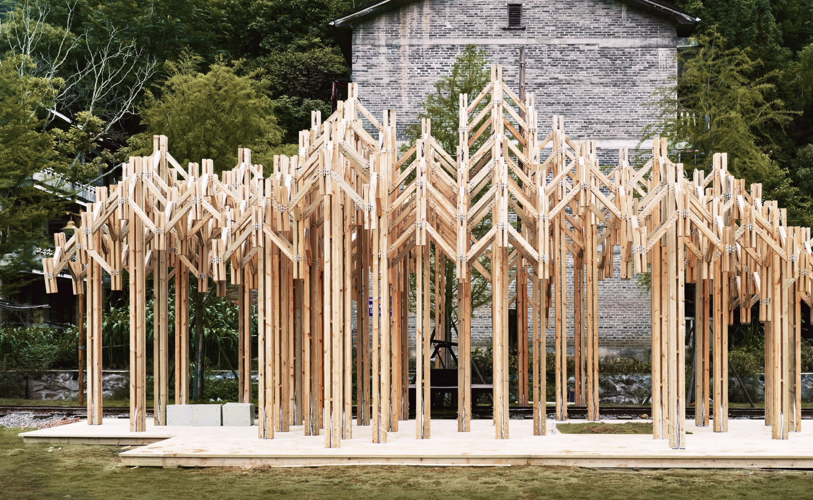
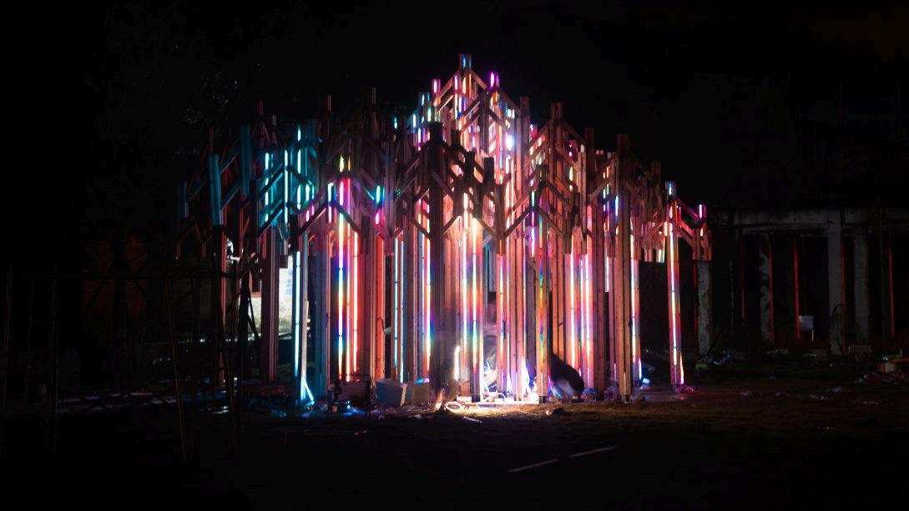
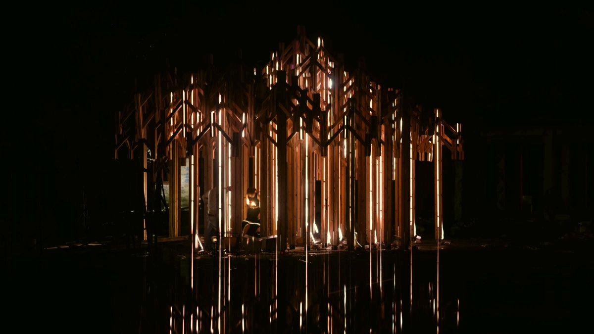
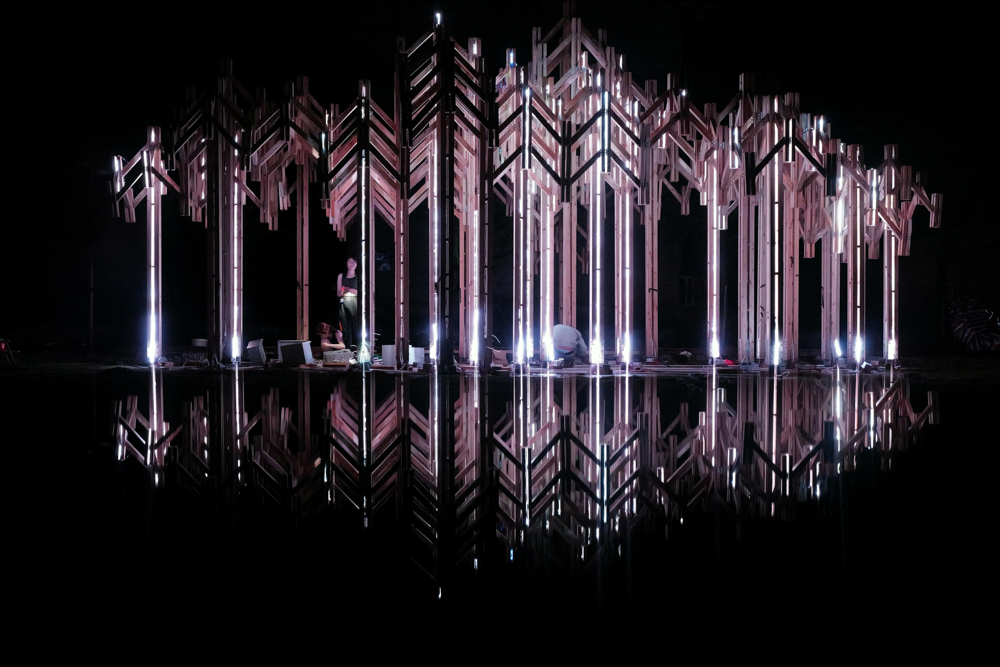
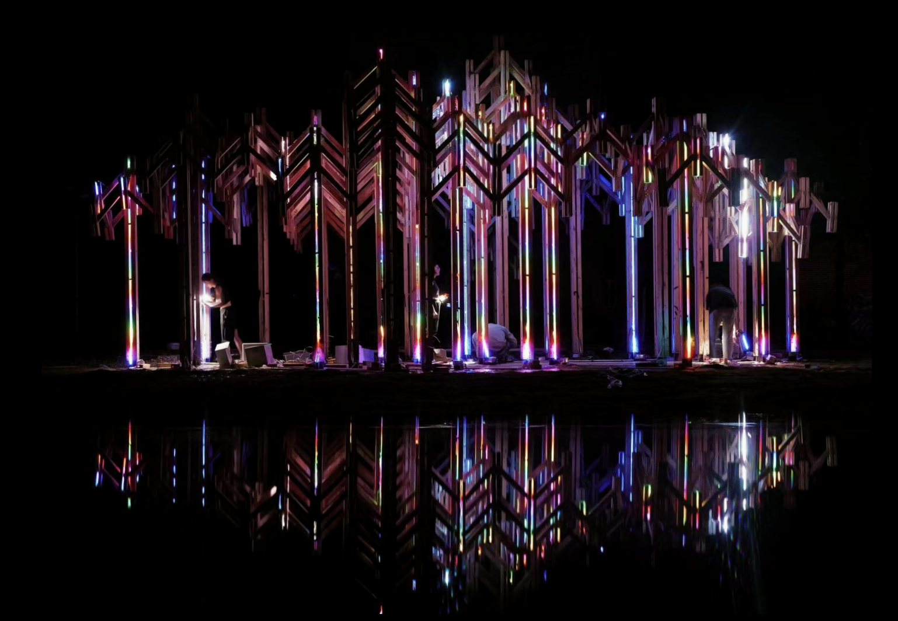

01A place to explore, before the lights turn on.
An open field of timber columns creates paths, glimpses and places to pause. I designed the sensing, circuits and interaction modes within this built setting.

02Four ways to bring the space to life.
Two inputs, four responses: microphone loudness and FFT spectrum; ultrasonic proximity with cumulative growth or an instant trigger.
Continuous sound → light height
Interaction studies based on the documented modes; timing and band allocation are illustrative.
03One shared signal. A local response at every column.
The master sends audio information wirelessly. Each column has its own controller and distance sensor, with the LEDs driven by the selected interaction mode.
04Light becomes part of the place.



